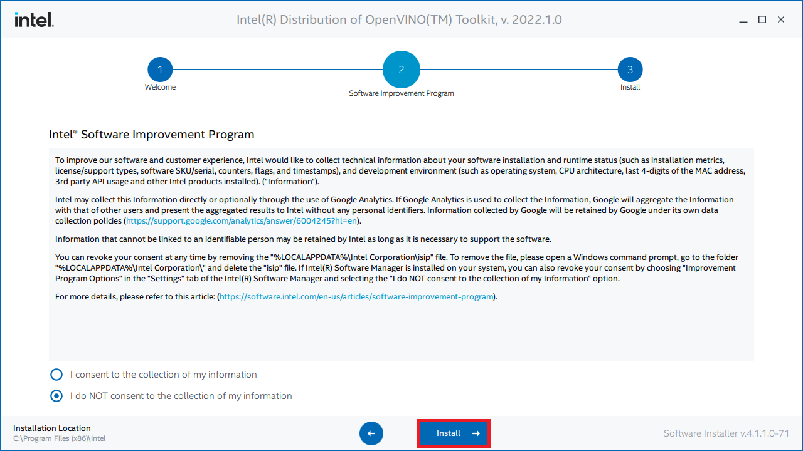

How to Create an OpenVINO Plugin for Unity on Windows Pt. 2
- Overview
- Install OpenVINO
- Create DLL Project
- Configure the Project
- Add Include Directories
- Link Libraries
- Post Build Events
- Update Precompiled Header File
- Update dllmain File
- Build Solution
- Gather Dependencies
- Summary
Overview
Part 1 covered modifying the training code from the fastai-to-unity tutorial to finetune models from the Timm library and exporting them as OpenVINO IR models. This post covers creating a dynamic link library (DLL) file in Visual Studio to perform inference with these IR models using OpenVINO.
Install OpenVINO
We need to download the OpenVINO Toolkit before creating our Visual Studio project. Go to the OpenVINO download page linked below.
Download OpenVINO Toolkit
Select the options outlined in the image below and click the Download button.
Double-click the file once it finishes downloading and click the Extract button in the popup window.

The installer will then verify the computer meets the system requirements. The toolkit includes the Python scripts for converting models, which require Python 3.6, 3.7, 3.8, or 3.9 to run. We will only use the files for C++ development in this post.

We can stick with the default Recommended Installation option.

The installer will then ask whether Intel can collect some information before starting the installation process.


Click Finish once the installation process completes.
Inspect OpenVINO Folder
If we look at the installation folder for the toolkit, we can see it also includes a version of OpenCV. We’ll use OpenCV to prepare image data from Unity before feeding it to the model.

I like to copy the OpenVINO folder to a separate directory with other dependencies for my C++ projects.

Now we can create our Visual Studio DLL project.
Create DLL Project
Open Visual Studio and select the Create a new project option.

Type DLL into the text box and select the Dynamic-Link Library (DLL) option. This option automatically configures a few parameters for us compared to starting with a standard console application.
Choose a name and location for the project and click the Create button. By default, the DLL file will use the project name.
Configure the Project
At the top of the window, open the Solution Configurations dropdown menu, and select Release.
Then, open the Solution Platform dropdown menu and select x64.

Add Include Directories
We need to tell Visual Studio where OpenVINO and OpenCV are so we can access their APIs. Right-click the project name in the Solution Explorer panel.

Select the Properties option in the popup menu.

In the Properties Window, open on the C/C++ dropdown. Select the Additional Include Directories section and click on <Edit..> in the dropdown.
Add the paths for the following folders, replacing <parent-folder-path> with the full path to the parent folder for the OpenVINO Toolkit, and click OK.
<parent-folder-path>\openvino_2022.1.0.643\runtime\include\ie<parent-folder-path>\openvino_2022.1.0.643\runtime\include<parent-folder-path>\openvino_2022.1.0.643\opencv\include<parent-folder-path>\openvino_2022.1.0.643\runtime\3rdparty\tbb\include

Link Libraries
Next, open the Linker dropdown in the Properties window and select Input. Select Additional Dependencies and click <Edit..>.
Add the paths to the following files, replacing <parent-folder-path> with the full path to the parent folder for the OpenVINO Toolkit, and click OK.
<parent-folder-path>\openvino_2022.1.0.643\opencv\lib\*<parent-folder-path>\openvino_2022.1.0.643\runtime\lib\intel64\Release\*<parent-folder-path>\openvino_2022.1.0.643\runtime\3rdparty\tbb\lib\*.lib
Post Build Events
Our DLL file will depend on the following DLL files included with the OpenVINO and OpenCV libraries.
OpenCV DLL files

OpenVINO DLL files
We can add a post-build event in Visual Studio to automatically copy these DLL files to the build folder for the project at compile time. Open the Build Events dropdown in the Properties window and select Post-Build Event. Select Command Line and click <Edit..>.
Add the following commands, replacing <parent-folder-path> with the full path to the parent folder for the OpenVINO Toolkit, and click OK.
xcopy <parent-folder-path>\openvino_2022.1.0.643\opencv\bin\opencv_core453.dll $(SolutionDir)$(Platform)\$(Configuration)\ /c /yxcopy <parent-folder-path>\openvino_2022.1.0.643\opencv\bin\opencv_imgproc453.dll $(SolutionDir)$(Platform)\$(Configuration)\ /c /yxcopy <parent-folder-path>\openvino_2022.1.0.643\opencv\bin\opencv_imgcodecs453.dll $(SolutionDir)$(Platform)\$(Configuration)\ /c /yxcopy <parent-folder-path>\openvino_2022.1.0.643\runtime\bin\intel64\Release\* $(SolutionDir)$(Platform)\$(Configuration)\ /c /yxcopy <parent-folder-path>\openvino_2022.1.0.643\runtime\3rdparty\tbb\bin\tbb.dll $(SolutionDir)$(Platform)\$(Configuration)\ /c /y
Finally, click the Apply button and close the Properties window.
With the dependencies taken care of, we can start modifying the code.
Update Precompiled Header File
We’ll first update the pch.h Precompiled Header file with the required header files. We can open the pch.h file by selecting it in the Solution Explorer window.

Comment or remove the “#include” line for the framework.h header file.
// pch.h: This is a precompiled header file.
// Files listed below are compiled only once, improving build performance for future builds.
// This also affects IntelliSense performance, including code completion and many code browsing features.
// However, files listed here are ALL re-compiled if any one of them is updated between builds.
// Do not add files here that you will be updating frequently as this negates the performance advantage.
#ifndef PCH_H
#define PCH_H
// add headers that you want to pre-compile here
//#include "framework.h"
#endif //PCH_HAdd required header files
Next, we’ll add the required header files for OpenVINO and OpenCV below //#include "framework.h" line.
// pch.h: This is a precompiled header file.
// Files listed below are compiled only once, improving build performance for future builds.
// This also affects IntelliSense performance, including code completion and many code browsing features.
// However, files listed here are ALL re-compiled if any one of them is updated between builds.
// Do not add files here that you will be updating frequently as this negates the performance advantage.
#ifndef PCH_H
#define PCH_H
// add headers that you want to pre-compile here
//#include "framework.h"
#include "openvino/openvino.hpp"
#include <opencv2/opencv.hpp>
#endif //PCH_HUpdate dllmain File
By default, the dllmain.cpp file contains the following code.
// dllmain.cpp : Defines the entry point for the DLL application.
#include "pch.h"
BOOL APIENTRY DllMain( HMODULE hModule,
DWORD ul_reason_for_call,
LPVOID lpReserved
)
{
switch (ul_reason_for_call)
{
case DLL_PROCESS_ATTACH:
case DLL_THREAD_ATTACH:
case DLL_THREAD_DETACH:
case DLL_PROCESS_DETACH:
break;
}
return TRUE;
}We can delete everything below the #include "pch.h" line.
Create a macro to mark functions we want to make accessible in Unity
// dllmain.cpp : Defines the entry point for the DLL application.
#include "pch.h"
// Create a macro to quickly mark a function for export
#define DLLExport __declspec (dllexport)Wrap the code in extern “C” to prevent name-mangling issues with the compiler
The rest of our code will go inside here.
// Wrap code to prevent name-mangling issues
extern "C" {
}Define variables
Inside the wrapper, we will declare the persistent variables needed for the DLL.
- ov::Core: represents an OpenVINO runtime Core entity
- ov::Model: A user-defined model
- ov::CompiledModel: represents a compiled model
- ov::InferRequest: an infer request that can be run in asynchronous or synchronous manners
- ov::Tensor: API holding host memory
// Inference engine instance
ov::Core core;
// The user define model representation
std::shared_ptr<ov::Model> model;
// A device-specific compiled model
ov::CompiledModel compiled_model;
// List of available compute devices
std::vector<std::string> available_devices;
// An inference request for a compiled model
ov::InferRequest infer_request;
// Stores the model input data
ov::Tensor input_tensor;
// A pointer for accessing the input tensor data
float* input_data;
// The number of image classes the current model can detect
int num_classes = 0;
// The current input image width
int input_w;
// The current input image height
int input_h;
// The total number pixels in the input image
int nPixels;
// The number of color channels in the input image
int num_channels = 3;Define a function to get the number of compute devices
The first function we’ll define will create a list of available device names and return the number of devices accessible by OpenVINO. We’ll use this information to select which device to use to perform inference from the Unity application. There might be an option named GNA (Gaussian & Neural Accelerator). GNA is a highly specialized neural coprocessor for tasks like noise cancellation. We’ll exclude it from the list of devices presented to the end user.
- ov::Core::get_available_devices(): Returns devices available for inference
/// <summary>
/// Get the number of available compute devices
/// </summary>
/// <returns></returns>
DLLExport int GetDeviceCount() {
// Reset list of available compute devices
available_devices.clear();
// Populate list of available compute devices
for (std::string device : core.get_available_devices()) {
// Skip GNA device
if (device.find("GNA") == std::string::npos) {
available_devices.push_back(device);
}
}
// Return the number of available compute devices
return available_devices.size();
}Define a function to get the name of a compute device
Next, we’ll define a function to return the name of a device at a specified index for the list of available devices.
/// <summary>
/// Get the name of the compute device name at the specified index
/// </summary>
/// <param name="index"></param>
/// <returns></returns>
DLLExport std::string* GetDeviceName(int index) {
return &available_devices[index];
}Define a function to load an OpenVINO model
OpenVINO needs to compile models for the target device. This process can take several seconds when using GPU inference. We can create a cache directory, so we only need to compile models for a specific resolution-device pair once.
We’ll place the code for loading an OpenVINO model inside a try-catch block to avoid crashing the application if we pass an incorrect file path.
If the model loads successfully, we’ll attempt to reshape the model input to the desired input dimensions. Note that models like MobileViT will need to use the input dimensions from training.
After reshaping the model input, we can compile the model for the target device.
We can get pointers to the model input tensor and create an inference request using the compiled model.
- ov::Core::set_property(): Sets properties for a device
- ov::Core::read_model(): Reads models from IR/ONNX/PDPD formats
- ov::Model::reshape(): Updates input shapes and propagates them down to the outputs of the model through all intermediate layers
- ov::Core::compile_model(): Creates a compiled model from a source model object
- ov::CompiledModel::create_infer_request(): Creates an inference request object used to infer the compiled model
- ov::InferRequest::get_input_tensor(): Gets an input tensor for inference
/// <summary>
/// Load a model from the specified file path
/// </summary>
/// <param name="modelPath">The path to the OpenVINO IR model file</param>
/// <param name="index">The compute device index</param>
/// <param name="inputDims">The source image resolution</param>
/// <returns></returns>
DLLExport int LoadModel(char* modelPath, int index, int inputDims[2]) {
// Initialize return value
int return_val = 0;
// Specify the cache directory for compiled gpu models
core.set_property("GPU", ov::cache_dir("cache"));
// Try loading the specified model
try { model = core.read_model(modelPath); }
// Return 1 if the model fails to load
catch (...) { return 1; }
// Try updating the model input dimensions
try { model->reshape({ 1, 3, inputDims[1], inputDims[0] }); }
// Return a value of 2 if we can't update the model input dimensions
catch (...) { return_val = 2; }
// Compile the loaded model for the target compute device
auto compiled_model = core.compile_model(model, "MULTI",
ov::device::priorities(available_devices[index]),
ov::hint::performance_mode(ov::hint::PerformanceMode::LATENCY),
ov::hint::inference_precision(ov::element::f32));
// Get the number of classes the current model can detect
ov::Output<const ov::Node> output = compiled_model.output();
num_classes = output.get_shape()[1];
// Create an inference request to use the compiled model
infer_request = compiled_model.create_infer_request();
// Get input tensor by index
input_tensor = infer_request.get_input_tensor(0);
// Get model input dimensions
input_w = input_tensor.get_shape()[3];
input_h = input_tensor.get_shape()[2];
nPixels = input_w * input_h;
// Get a pointer to the input tensor
input_data = input_tensor.data<float>();
// Return a value of 0 if the model loads successfully
return return_val;
}Define a function to perform inference
We will access the pixel data for the input image from Unity with a pointer to a uchar (unsigned 1-byte integer) array and wrap the data in a cv::Mat variable for processing.
We don’t need to normalize the input image since the IR model does it internally.
Once again, we’ll use a try-catch block to avoid crashing the application if an error occurs during the forward pass. We can use the std::max_element() and std::distance() functions to find the class index with the highest confidence score.
- cv::Mat: n-dimensional dense array class
- cv::cvtColor(): Converts an image from one color space to another
- ov::InferRequest::infer(): Infers specified input in synchronous mode
- ov::InferRequest::get_output_tensor(): Gets an output tensor for inference
- std::distance(): Calculates the number of elements between first and last
- std::max_element(): Returns an iterator pointing to the element with the largest value in the range
[first,last)
/// <summary>
/// Perform inference with the provided texture data
/// </summary>
/// <param name="inputData"></param>
/// <returns></returns>
DLLExport int PerformInference(uchar* inputData) {
// Initialize predicted class index to an invalid value
int class_idx = -1;
try {
// Store the pixel data for the source input image in an OpenCV Mat
cv::Mat texture = cv::Mat(input_h, input_w, CV_8UC4, inputData);
// Remove the alpha channel
cv::cvtColor(texture, texture, cv::COLOR_RGBA2RGB);
// Iterate over each pixel in image
for (int p = 0; p < nPixels; p++) {
// Iterate over each color channel for each pixel in image
for (int ch = 0; ch < num_channels; ++ch) {
input_data[ch * nPixels + p] = texture.data[p * num_channels + ch] / 255.0f;
}
}
// Perform inference
infer_request.infer();
// model has only one output
ov::Tensor output_tensor = infer_request.get_output_tensor();
// IR v10 works with converted precisions (i64 -> i32)
auto out_data = output_tensor.data<float>();
// Get the predicted class index with the highest confidence score
class_idx = std::distance(out_data, std::max_element(out_data, out_data + num_classes));
}
catch (...) {
// Return a value of -2 if an error occurs during the forward pass
class_idx = -2;
}
return class_idx;
}That is all the code needed for the plugin. We can now build the solution to generate the DLL file.
Build Solution
Open the Build menu at the top of the Visual Studio window and click Build Solution. Visual Studio will generate a new x64 folder in the project directory containing the DLL file and its dependencies.
Gather Dependencies
Right-click the project name in the Solution Explorer panel and select Open Folder in File Explorer from the popup menu.

In the new File Explorer window, go to the parent folder.
Open the x64 → Release subfolder.

We’ll need to copy all the DLL files in this folder and the plugins.xml file to the Unity project.
Summary
This post covered creating a dynamic link library (DLL) file to perform inference using OpenVINO. Part 3 will cover the required modifications for the original Unity project to use this DLL.
Previous: How to Create an OpenVINO Plugin for Unity on Windows Pt. 1
Next: How to Create an OpenVINO Plugin for Unity on Windows Pt. 3
Project Resources: GitHub Repository
I’m Christian Mills, an Applied AI Consultant and Educator.
Whether I’m writing an in-depth tutorial or sharing detailed notes, my goal is the same: to bring clarity to complex topics and find practical, valuable insights.
If you need a strategic partner with my approach to thinking and problem-solving for your AI project, I’m here to help. Let’s talk about de-risking your roadmap and building a real-world solution.
Start the conversation with my Quick AI Project Assessment or learn more about my approach.